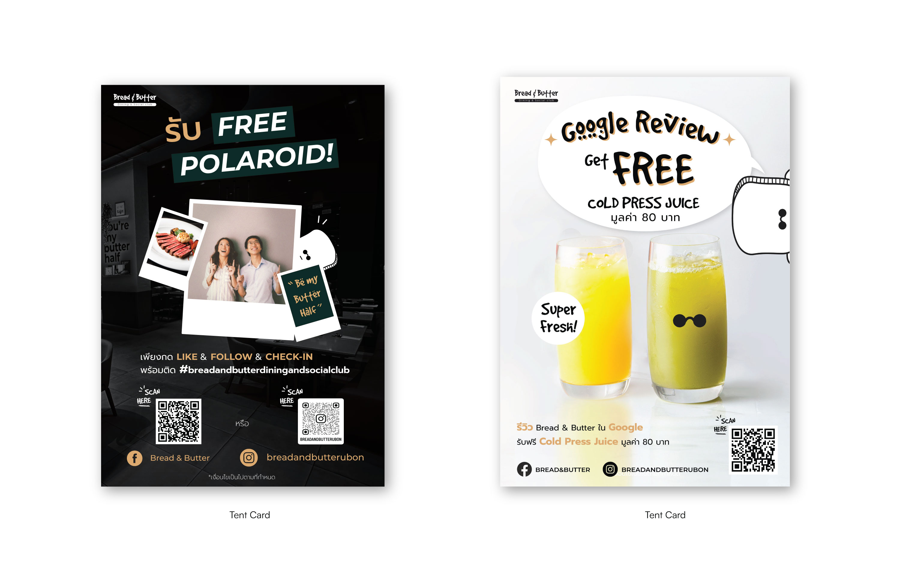
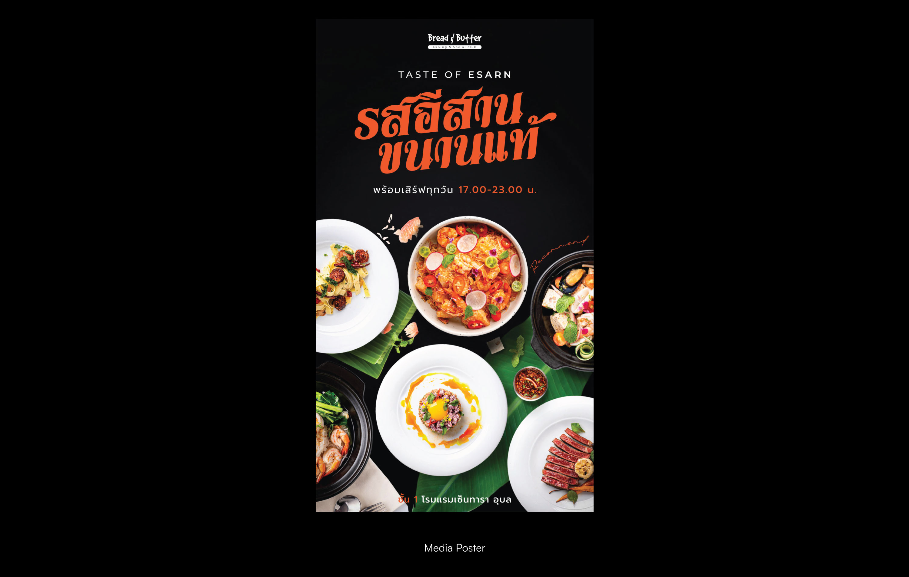
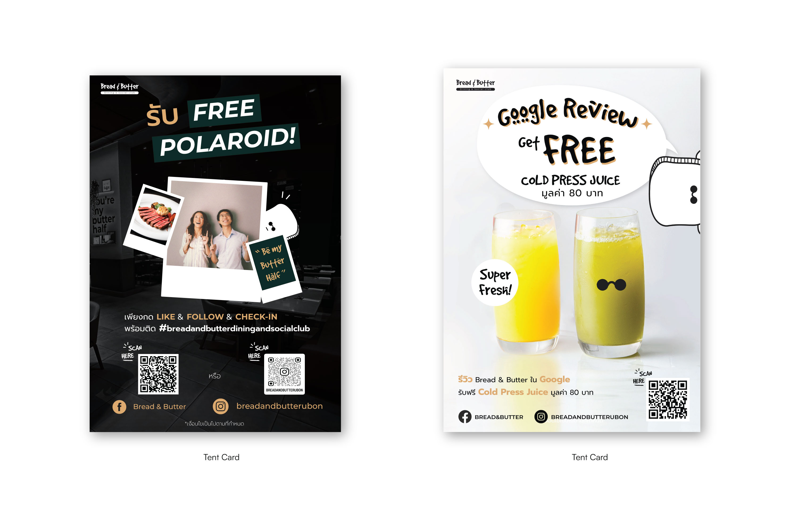
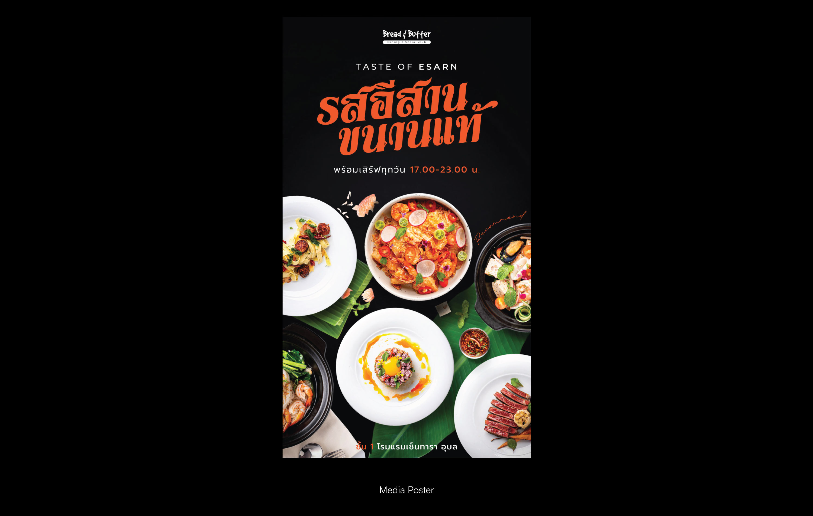

Bread & Butter
Bread and Butter is a newly launched Thai fusion restaurant under the Centara hotel, which is owned by the company I interned with. During my internship, I was responsible for designing a variety of marketing assets including the kids’ menu, tent cards, billboards, and coloring pages. For my final project, I took the initiative to pitch, design, and code a website prototype for the restaurant, combining both visual branding and user experience considerations.


 


